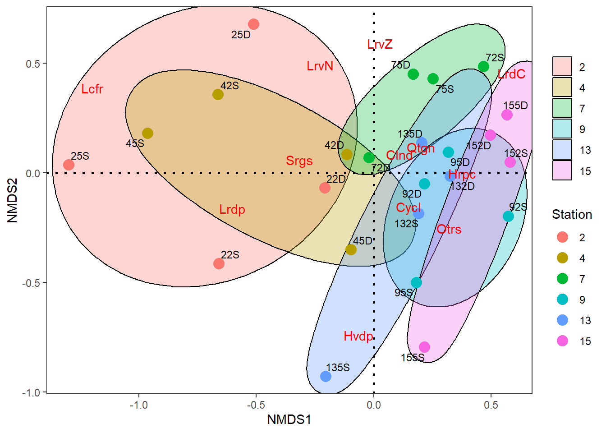
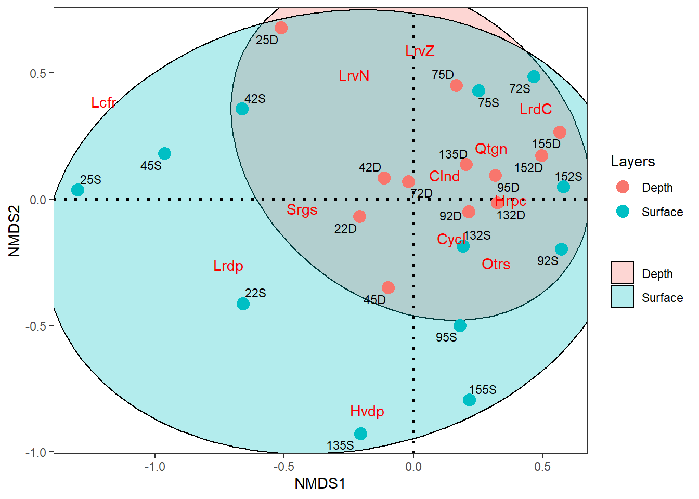
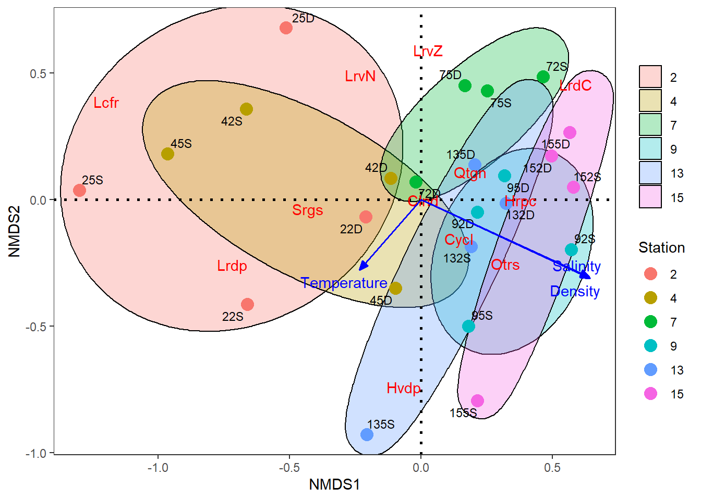
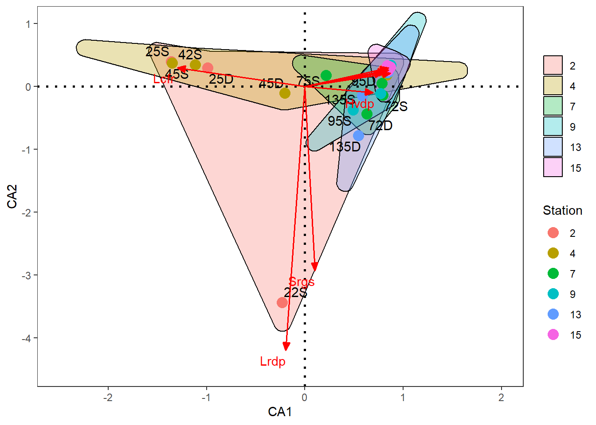
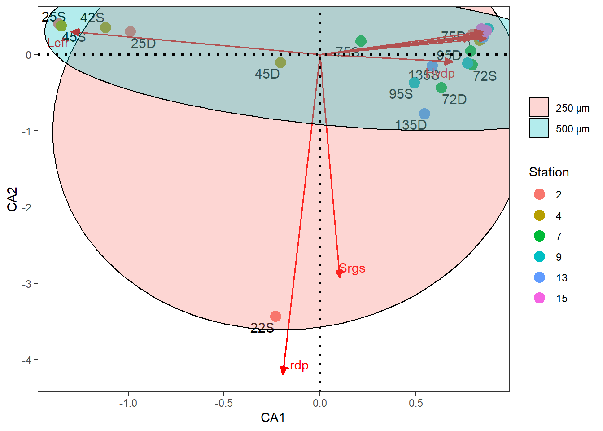
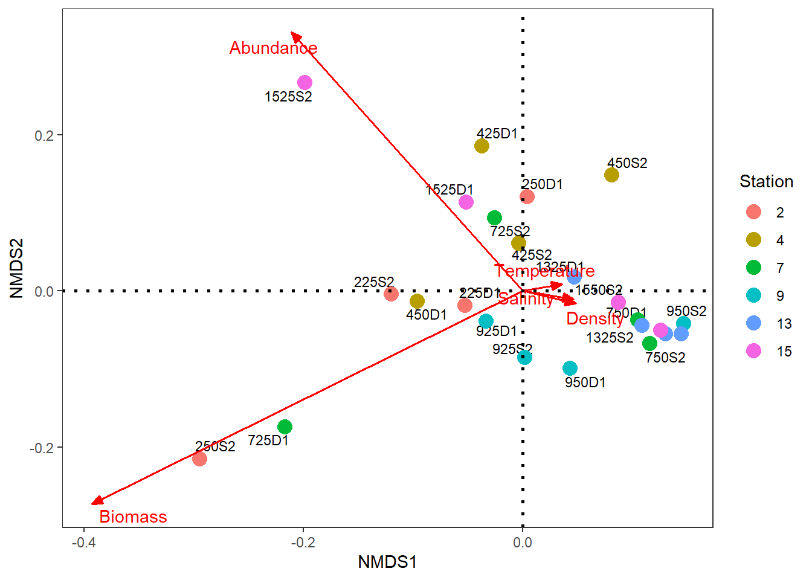
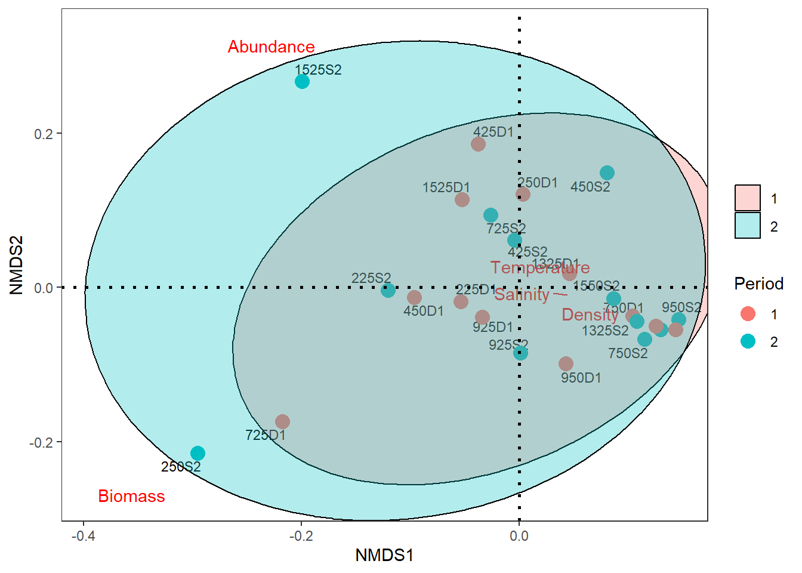
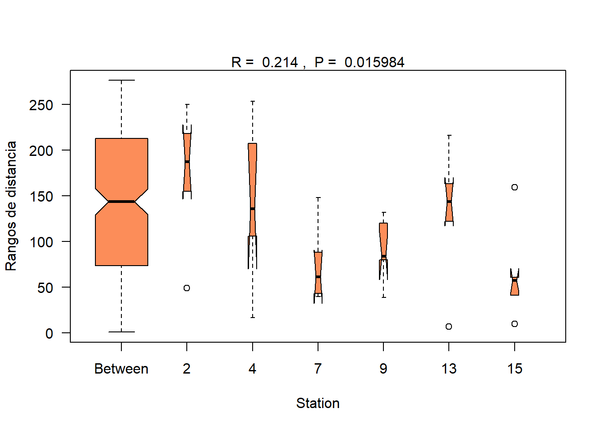

Resumen
El presente ejercicio consiste en el procesamiento inicial de los datos entregados por el profesor Lenin Florez para dar respuesta al siguiente requerimiento:
13.The zooplankton community structure requires further exploration. I suggest applying hierarchical cluster analysis or NMDS ordination to better visualize separation between sampling events based on mesozooplankton abundance data.
Para este requerimiento, planteo realizar la propuesta de Borcard et al. (2018), con ténicas de ordenación sin restricciones (unconstrained), de clasificación y de pruebas de hipótesis multivariadas.
1. Análisis de Componentes Principales (PCA)
Paso 1. Cargar Librerías
Librerías requeridas para el PCA.
Paso 2. Base de datos de los taxones
La Tabla 1 muestra la oranización de los Groups de taxones (13), para los diferentes sitios o Station (6), los Sizes (2) y los Layerss (2).
| Station | Size | Layers | Groups | Abundance | Temperature | Salinity | Density |
|---|---|---|---|---|---|---|---|
| 2 | 250 μm | Surface | Quetognatos | 0 | 30.29749 | 34.69981 | 21.417828 |
| 2 | 250 μm | Surface | Sergestidae | 0 | 29.40959 | 25.83323 | 15.085254 |
| 2 | 250 μm | Surface | Luciferidae | 0 | 29.59008 | 12.38513 | 5.729643 |
| 2 | 250 μm | Surface | Calanoida | 32 | 30.29749 | 34.69981 | 21.417828 |
| 2 | 250 μm | Surface | Cyclopoida | 4 | 29.40959 | 25.83323 | 15.085254 |
| 2 | 250 μm | Surface | Harpacticoida | 2 | 29.59008 | 12.38513 | 5.729643 |
Si los nombres de los taxones son demasiado largos, se pueden abreviar con el número de letras que se requiera (ej: minlength = 4), esto para que las figuras que incluyan a los taxones, no queden tan saturadas de texto (Tabla 2).
| Groups | Abbreviations |
|---|---|
| Quetognatos | Qtgn |
| Sergestidae | Srgs |
| Luciferidae | Lcfr |
| Calanoida | Clnd |
| Cyclopoida | Cycl |
| Harpacticoida | Hrpc |
| Larvas de peces | Lrdp |
| Huevos de peces | Hvdp |
| Larva Nauplio | LrvN |
| Larva Zoea | LrvZ |
| Otros | Otrs |
En la Tabla 3 Ref corresponde a la primera letra de la Station, el Size y el Layers. Ej. 22P corresponde a la Station 2, el Size 250 y el Layers profundidad.
| Ref | Station | Size | Layers | Temperature | Salinity | Density | Qtgn | Srgs | Lcfr | Clnd | Cycl | Hrpc | Lrdp | Hvdp | LrvN | LrvZ | Otrs |
|---|---|---|---|---|---|---|---|---|---|---|---|---|---|---|---|---|---|
| 22D | 2 | 250 μm | Depth | 29.88 | 25.26 | 14.40 | 84 | 112 | 400 | 12672 | 408 | 48 | 68 | 135 | 56 | 28 | 3 |
| 22S | 2 | 250 μm | Surface | 29.75 | 23.27 | 13.35 | 0 | 1096 | 984 | 568 | 20 | 2 | 2488 | 28 | 0 | 0 | 24 |
| 25D | 2 | 500 μm | Depth | 29.40 | 19.97 | 10.53 | 0 | 9 | 355 | 50 | 0 | 0 | 0 | 0 | 1 | 16 | 3 |
| 25S | 2 | 500 μm | Surface | 29.99 | 28.66 | 17.02 | 2 | 2 | 10672 | 10 | 0 | 0 | 6 | 5 | 0 | 0 | 0 |
| 42D | 4 | 250 μm | Depth | 29.38 | 17.34 | 8.76 | 368 | 368 | 64 | 10680 | 928 | 32 | 48 | 120 | 280 | 400 | 200 |
| 42S | 4 | 250 μm | Surface | 29.52 | 21.89 | 12.11 | 0 | 4 | 2240 | 246 | 17 | 1 | 16 | 0 | 2 | 2 | 1 |
Paso 3. Exploración de relaciones biol vs. biol4
La Figura 1 muestra que hay pocas relaciones lineales

La Figura 2 muestra la relación de las variables biológicas con la transformación de Hellinger, pero las relaciones lineales siguen siendo bajas. En este sentido, no es recomendable realizar el PCA. Se recomienda un NMDS.

2. Escalamiento Multidimensional no Métrico (NMDS)
Se aplicará esta técnica para explorar los gradientes en la ordenación de los sitios o Station, su relación con los trece Groups taxonómicos y las variables ambientales. Se utilizará la distancia Bray Curtis, para la asociación de los datos.
Paso 1. Cargar Librerías
Se ejecutan las librerías necesarias para este análisis.
Paso 2. NMDS
Se utiliza la distancia Bray Curtis y el estrés generado es de 0.17 (17%), denotando una buena configuración para este análisis.
| sitio | NMDS1 | NMDS2 | Station | Size | Layers |
|---|---|---|---|---|---|
| 22D | -0.1964112 | -0.1917069 | 2 | 250 μm | Depth |
| 22S | -0.5560553 | -0.4986542 | 2 | 250 μm | Surface |
| 25D | -0.4383616 | 0.6431930 | 2 | 500 μm | Depth |
| 25S | -1.2923563 | -0.1067045 | 2 | 500 μm | Surface |
| 42D | -0.0721078 | 0.1171290 | 4 | 250 μm | Depth |
| 42S | -0.6403648 | 0.2974482 | 4 | 250 μm | Surface |
A continuación se extraen las coordenadas de las Station, Sizes, Layerss, Groups taxonómicos y variables ambientales, para ser ordenadas con la librería ggplo2.
L Figura 3, muestra la ordenación del NMDS para las referencias de las Station, con los Groups taxonómicos y las variables ambientales. No se logra apreciar un gradiente claro, aunque las Station 9, 13 y 15 son las que agrupan mayor cantidad de taxones, asociadas a mayor Temperature y Salinity.

La Figura 4 muestra la diferenciación por Station, se logra observar un gradiente horizontal, en donde algunas Station muestran diferencias por sus Groups taxonómicos.

La Figura 5 que la composición taxonómica con 250 micras, se encuentra anidada en 500 micras.

Similar a la Figura 5, la Figura 6, muestra ausencia de diferencias en la composición taxonómica entre Layerss.

La Figura 7 complementa a la @fi4, al incorporar las variables ambientales en la caracterización de las Station y de los Groups taxonómicos.

3. Análisis de Correspondencia Simple (CA)
En este análisis se explora una propuesta complementaria a la realizada con el NMDS, con la diferencia de que se utilizará a la distancia chi cuadrado, para relacionar a las localidades y a los Groups taxonómicos.
Paso 1. Cargar Librerías
Se ejecutan las librerías necesarias para este análisis.
Paso 2. CA con el paquete ggplo2
Se utiliza la distancia Chi Cuadrado con las trece variables biológicas. La varanza capturada por los dos primeros ejes canónicos es de 0.86 (86%).
La Figura 8 no muestra un gradiente muy claro en la caracterización de los Groups taxonómicos para las Station evaluadas.

La Figura 9 tampoco permite visualizar un gradiente claro en la ordenación de los sitios y de los taxones.



4. Escalamiento Multidimensional no Métrico (NMDS)
Esta técnica se aplicará, para evaluar otra base de datos, que no relaciona a los trece Groups taxonómicos, pero si a los datos de Abundance, de Biomass y ambientales, entre Station o sitios, Sizes, Layerses y épocas climáticas.
Paso 1. Cargar la base de datos
Se ejecutan las librerías necesarias para este análisis.
Paso 2. Base de datos de los taxones
Base de datos con los datos de Abundance, de Biomass y ambientales, entre Station o sitios, Sizes, Layerses y épocas climáticas. (Tabla 4).
| Stations | Size | Layers | Period | Abundance | Biomass | Temperature | Salinity | Density |
|---|---|---|---|---|---|---|---|---|
| 4 | 500 μm | Depth | 1 | 4.501723 | 0.1147933 | 29.97106 | 26.28779 | 15.23075 |
| 4 | 500 μm | Depth | 1 | 4.318765 | 0.1147933 | 29.98770 | 26.69368 | 15.52944 |
| 4 | 500 μm | Depth | 1 | 15.720304 | 10.8987720 | 30.11647 | 33.95946 | 20.92512 |
| 4 | 500 μm | Depth | 1 | 376.190539 | 10.8987720 | 30.13961 | 34.04838 | 20.98512 |
| 7 | 500 μm | Depth | 1 | 28.179135 | 0.5760857 | 29.92421 | 33.53299 | 20.67232 |
| 7 | 500 μm | Depth | 1 | 38.975961 | 0.5760857 | 29.94042 | 33.80792 | 20.87408 |
En la Tabla 5 Ref corresponde a la primera letra de la Station, el Size, la Layers y la época. Ej. 225P1 corresponde a la Station 2, el Size 250 y el Layers Profundidad y a la Época 1.
| Ref | Stations | Size | Layers | Period | Abundance | Biomass | Temperature | Salinity | Density |
|---|---|---|---|---|---|---|---|---|---|
| 225D1 | 2 | 250 μm | Depth | 1 | 251.11 | 2.53 | 29.90 | 25.91 | 14.89 |
| 225S2 | 2 | 250 μm | Surface | 2 | 460.55 | 4.07 | 29.77 | 24.31 | 14.08 |
| 250D1 | 2 | 500 μm | Depth | 1 | 568.05 | 0.20 | 29.40 | 19.97 | 10.53 |
| 250S2 | 2 | 500 μm | Surface | 2 | 28.50 | 32.22 | 29.99 | 28.66 | 17.02 |
| 425D1 | 4 | 250 μm | Depth | 1 | 914.15 | 0.28 | 29.38 | 17.34 | 8.76 |
| 425S2 | 4 | 250 μm | Surface | 2 | 477.33 | 0.50 | 29.61 | 23.23 | 13.08 |
Paso 3. Exploración de relaciones biol vs. biol4
Pocas relaciones lineales

Paso 4. NMDS
Se utiliza la distancia Bray Curtis y el estrés generado es de 0.078 (7%), denotando una buena configuración para este análisis.
La Figura 10 muestra un patrón poco claro en la ordenación de las variables y las localidades.

La Figura 11 muestra poca diferenciación entre las Station, con las variables que las caracterizan.



5. Análisis de Clúster (CLA)
Este análisis fue solicitado por los evaluadores, basado en la Abundance de los trece Groups taxonómicos, se pretende clasificar a las localidades en Groups y compararlos con las Station del estudio.
Cargar Librerías
Se cargan las librerías requeridas para el análisis.
La Tabla 6, es la misma Tabla 3 utilizada al inicio de este reporte, para el NMDS y CA.
| Ref | Station | Size | Layers | Temperature | Salinity | Density | Qtgn | Srgs | Lcfr | Clnd | Cycl | Hrpc | Lrdp | Hvdp | LrvN | LrvZ | Otrs | |
|---|---|---|---|---|---|---|---|---|---|---|---|---|---|---|---|---|---|---|
| 22D | 22D | 2 | 250 μm | Depth | 29.88 | 25.26 | 14.40 | 84 | 112 | 400 | 12672 | 408 | 48 | 68 | 135 | 56 | 28 | 3 |
| 22S | 22S | 2 | 250 μm | Surface | 29.75 | 23.27 | 13.35 | 0 | 1096 | 984 | 568 | 20 | 2 | 2488 | 28 | 0 | 0 | 24 |
| 25D | 25D | 2 | 500 μm | Depth | 29.40 | 19.97 | 10.53 | 0 | 9 | 355 | 50 | 0 | 0 | 0 | 0 | 1 | 16 | 3 |
| 25S | 25S | 2 | 500 μm | Surface | 29.99 | 28.66 | 17.02 | 2 | 2 | 10672 | 10 | 0 | 0 | 6 | 5 | 0 | 0 | 0 |
| 42D | 42D | 4 | 250 μm | Depth | 29.38 | 17.34 | 8.76 | 368 | 368 | 64 | 10680 | 928 | 32 | 48 | 120 | 280 | 400 | 200 |
| 42S | 42S | 4 | 250 μm | Surface | 29.52 | 21.89 | 12.11 | 0 | 4 | 2240 | 246 | 17 | 1 | 16 | 0 | 2 | 2 | 1 |
En la siguiente figura se observa que las localidades 2 y 4 son las que presentan los taxones con los mayores valores de Abundance.

La Salinity y la Density son variables derivadas, que presentan un patrón entre las localidades, inverso al de los taxones.
Paso 1. Distancia entre observaciones
Se aplicará la distancia Bray Curtis para las variables biológicas, dada la poca linealidad en sus relaciones.
Paso 2. Elección del método de agrupación de mayor ajuste
2.1 Cálculo de los siete dendogramas
2.2 Cálculo de las correlaciones cofenéticas
El método de agrupación UPGMA es el que presentó el mejor ajuste cofenético.
| Met | Cofen | |
|---|---|---|
| upgma | 3 | 0.917 |
| upgmc | 4 | 0.897 |
| compl | 2 | 0.842 |
| wpgma | 5 | 0.841 |
| simple | 1 | 0.787 |
| wpgmc | 6 | 0.760 |
| ward | 7 | 0.711 |
Paso 3. Número de Groups formados
3.1 Niveles de fusión
Esta ténica muestra que la mayor amplitud se presenta en la formación de tres Groups o clúester, que reunen a las observaciones clasificadas.

3.2 Método de silueta
Esta ténica muestra que la mayor amplitud se presenta en la formación de diez Groups o clúester, que reunen a las observaciones clasificadas.
[1] 10
Silueta-Número óptimo de Clusters k= 10
Con una aplitud promedio de silueta 0.3891467 3.3 Dendograma jerárquico final
Dendograma generado con el método upgma, la distancia Bray y los tres Groups formados.

3.4 Dendograma no jerárquico final
| grp | Ref | Station | Size | Layers | Temperature | Salinity | Density | |
|---|---|---|---|---|---|---|---|---|
| 22D | 1 | 22D | 2 | 250 μm | Depth | 29.88 | 25.26 | 14.40 |
| 22S | 2 | 22S | 2 | 250 μm | Surface | 29.75 | 23.27 | 13.35 |
| 25D | 3 | 25D | 2 | 500 μm | Depth | 29.40 | 19.97 | 10.53 |
| 25S | 2 | 25S | 2 | 500 μm | Surface | 29.99 | 28.66 | 17.02 |
| 42D | 1 | 42D | 4 | 250 μm | Depth | 29.38 | 17.34 | 8.76 |
| 42S | 2 | 42S | 4 | 250 μm | Surface | 29.52 | 21.89 | 12.11 |

Paso 4. Aporte de las variables a la clasificación
En rojo se identifica a los Groups taxonómicos que por su patrón de Abundance, aportan a la clasificación de los sitios.

Para este caso, el aporte de los taxones se da para las Station.

6. Análisis Discriminante Lineal (LDA)
Este análisis se realiza para intentar optimizar la separación de las Station, por la información de las Abundances de los diferentes Groups taxonómicos. Se incorpora a la variante de discriminante canónico, para analizar el aporte de los taxones en la clasificación.
Cargar Librerías
Se cargan diferentes librerías requeridas para el lda.
La Tabla 6, es la misma Tabla 6 utilizada para la mayoría de los análisis anteriores.
| Ref | Station | Size | Layers | Temperature | Salinity | Density | Qtgn | Srgs | Lcfr | Clnd | Cycl | Hrpc | Lrdp | Hvdp | LrvN | LrvZ | Otrs | |
|---|---|---|---|---|---|---|---|---|---|---|---|---|---|---|---|---|---|---|
| 22D | 22D | 2 | 250 μm | Depth | 29.88 | 25.26 | 14.40 | 84 | 112 | 400 | 12672 | 408 | 48 | 68 | 135 | 56 | 28 | 3 |
| 22S | 22S | 2 | 250 μm | Surface | 29.75 | 23.27 | 13.35 | 0 | 1096 | 984 | 568 | 20 | 2 | 2488 | 28 | 0 | 0 | 24 |
| 25D | 25D | 2 | 500 μm | Depth | 29.40 | 19.97 | 10.53 | 0 | 9 | 355 | 50 | 0 | 0 | 0 | 0 | 1 | 16 | 3 |
| 25S | 25S | 2 | 500 μm | Surface | 29.99 | 28.66 | 17.02 | 2 | 2 | 10672 | 10 | 0 | 0 | 6 | 5 | 0 | 0 | 0 |
| 42D | 42D | 4 | 250 μm | Depth | 29.38 | 17.34 | 8.76 | 368 | 368 | 64 | 10680 | 928 | 32 | 48 | 120 | 280 | 400 | 200 |
| 42S | 42S | 4 | 250 μm | Surface | 29.52 | 21.89 | 12.11 | 0 | 4 | 2240 | 246 | 17 | 1 | 16 | 0 | 2 | 2 | 1 |
Se vuelve a mostrar la resolución de los taxones y de las variables ambientales para clasificar a las Station o sitios de muestreo.


Paso 1. selección de una muestra aleatoria para el lda
División de los datos en conjuntos de entrenamiento y prueba. Se recomienda estandarizar o normalizar las variables predictoras (Abundances de taxones) para que no haya un efecto de la escala. Algunos autores recomiendan dividir los datos de entrenamiento en un 60% y los datos de la prueba en 40% FINNSTATS o datos de entrenamiento en un 80% y los de prueba en un 20%. STHDA. Se utilizará la segunda propuesta para este ejercicio.
1. División de los datos en conjuntos de entrenamiento y prueba
- Normalizar los datos. Las variables categóricas (Station) se ignoran automáticamente.
Paso 2. Supuestos de normalidad y homogeneidad de covarianzas
Supuesto 1. Normalidad multivariada
Este es uno de los requisitos que deben presentar los datos, para utilizar al lda como un modelo lineal. En caso de que no se cumpla este supuesto o no se pueda ejecutar, puede usarse el lda como un análisis exploratorio.
Se corrió el diagnóstico de normalidad multivariada para cada Station, pero las muestras son matrices singulares, todas las matrices son singulares, impidiendo la ejecución del procedimiento.
Supuesto 2. Homogeneidad de covarianzas (esfericidad)
Se realizaron dos anovas permutacionales, las cuales permitieron demostrar que se cumple el supuesto de homogeneidad de covarianzas (valor p es mayor a 0.05).
Analysis of Variance Table
Response: Distances
Df Sum Sq Mean Sq F value Pr(>F)
Groups 5 51.679 10.3357 1.7301 0.1787
Residuals 18 107.535 5.9742
Permutation test for homogeneity of multivariate dispersions
Permutation: free
Number of permutations: 999
Response: Distances
Df Sum Sq Mean Sq F N.Perm Pr(>F)
Groups 5 51.679 10.3357 1.7301 999 0.137
Residuals 18 107.535 5.9742
Paso 3. Análisis discriminante lineal de Fisher
Se analizará el desempeño del modelo discriminante lineal, para clasificar a las seis Station, basado en las Abundances de los Groups taxonómicos.
2 4 7 9 13 15
0.17 0.17 0.17 0.17 0.17 0.17 La función de desempeño, genera la siguiente tabla de contingencia, en la que a excepción de la Station 2 (la más diferente), muestra una mezcla de observaciones que no permiten diferenciar claramente a la Station, eso se da por la similitud en la composición y Abundance de los Groups taxonómicos entre Station.
group
Station 2 4 7 9 13 15
2 4 0 0 0 0 0
4 0 2 1 0 1 0
7 0 1 2 1 0 0
9 0 0 1 1 0 2
13 0 1 0 0 3 0
15 0 0 1 1 0 2El siguiente resultado muestra el porcentaje de acierto en la clasificación de las Station, el cual es bajo en la mayoría de los casos.
2 4 7 9 13 15
100 50 50 25 75 50
Paso 4. Visualización grafica del LDA
Se utilizará el paquete ggplot2 como se ha venido empleando en las diferentes técnicas, debido a su buen nivel de resolución para visualizar patrones en los datos.
La siguiente figura corrobora la separación de la Station 2, debido a su diferencia en la composición y Abundance de taxones encontrados. El resto de localidades presentan una mezcla o mayor similitud taxonómica.
[1] "Ref" "Station" "Size" "Layers" "Temperature"
[6] "Salinity" "Density" "Qtgn" "Srgs" "Lcfr"
[11] "Clnd" "Cycl" "Hrpc" "Lrdp" "Hvdp"
[16] "LrvN" "LrvZ" "Otrs" El siguiente análisis discriminante canónico, permite demostrar que la diferencia de la Station 2, se debe a la composición y Abundance de taxones como Srgs, Lcfr, Lrdp y Hvdp.

7. Manovas - Groups Taxonómicos de biol2
El siguiente manova se emplea para probar la hipótesis de diferencias entre las Station, de acuerdo a la Abundance y composición de los Groups taxonómicos. Como es un modelo lineal paramétrico, se deben probar los supuestos paramétricos encontrando que no se cumple la normalidad multivariada de los residuales, por lo cual, posteriormente se realizaran permanovas que no requieren este supuesto.
Paso 1. Análisis de Varinaza Multivariado - MANOVA
1.1 Respuesta de cada variable a las diferencias entre Station
solo tres taxones muestran significancia para diferenciar a las Station (valor p < 0,05)
| Taxa | Valores |
|---|---|
| Lcf | 0.0095 |
| Otrs | 0.0279 |
| LrvN | 0.0422 |
| Qtgn | 0.0549 |
| LrvZ | 0.0668 |
| Cycl | 0.1085 |
| Hvdp | 0.2080 |
| Clnd | 0.3225 |
| Lrdp | 0.4135 |
| Srgs | 0.4342 |
| Hrpc | 0.7067 |
1.2 Cuatro tipos de MANOVA
Solo el test de Roy muestra diferencias significativas en la Abundance y composición para las Station en comparación (valor p < 0.05)
Df Pillai approx F num Df den Df Pr(>F)
Station 5 2.5409 1.1272 55 60 0.3243
Residuals 18 Df Wilks approx F num Df den Df Pr(>F)
Station 5 0.0088717 1.3111 55 40.617 0.1844
Residuals 18 Df Hotelling-Lawley approx F num Df den Df Pr(>F)
Station 5 13.728 1.5975 55 32 0.07816 .
Residuals 18
---
Signif. codes: 0 '***' 0.001 '**' 0.01 '*' 0.05 '.' 0.1 ' ' 1 Df Roy approx F num Df den Df Pr(>F)
Station 5 10.117 11.037 11 12 0.0001167 ***
Residuals 18
---
Signif. codes: 0 '***' 0.001 '**' 0.01 '*' 0.05 '.' 0.1 ' ' 11.3. Supuesto de normalidad de los residuales del MANOVA
No se cumple el supuesto de normalidad multivariada sobre los residuales del Manova (W = 0.65, p-value = 2.8e-06). En este sentido, el MANOVA no puede ser utilizado para probar diferencias entre la Station.
Shapiro-Wilk normality test
data: Z
W = 0.6573, p-value = 2.885e-06
1.4. Supuesto de independencia
Se cumple este supuesto (valor p > 0.05).
lag Autocorrelation D-W Statistic p-value
1 -0.3499029 2.694424 0.534
Alternative hypothesis: rho != 0
8. Permanovas - Groups Taxonómicos
Esta prueba de hipótesis se realiza, debido a que no se cumplieron algunos supuestos del MANOVA. Se analizarán diferentes variantes como el ANOSIM y el PERMANOVA de uno y varios factores.
Permanova 1. Análisis de Similitudes - ANOSIM
Paso 1. Disancia entre observaciones (Hellinger para este caso)
Se realiza la transformación de hellinger, debido a que logra linealizar las Abundances de los taxones, permitiendo encontrar diferencias entre algunas de las Station en comparación.
Paso 2. Prueba de hipótesis de igualdad de medias multivariadas
Se presentan pocas diferencias entre las Station de acuerdo a las Groups taxonómicos seleccionados (R= 0.21, p= 0.012).
Call:
anosim(x = biol2.dist1, grouping = biol2$Station, permutations = 1000)
Dissimilarity: bray
ANOSIM statistic R: 0.2132
Significance: 0.016983
Permutation: free
Number of permutations: 1000
Upper quantiles of permutations (null model):
90% 95% 97.5% 99%
0.103 0.140 0.170 0.236
Dissimilarity ranks between and within classes:
0% 25% 50% 75% 100% N
Between 1 77.25 145.5 212.25 276 240
2 64 168.25 196.0 214.75 250 6
4 20 142.50 177.5 211.00 254 6
7 24 34.25 50.0 69.50 119 6
9 50 55.50 91.5 119.25 157 6
13 3 118.00 132.5 141.00 192 6
15 10 64.75 72.0 75.50 77 6
Paso 3. Figura del ANOSIM

Permanova 2. Permanova de un factor (una vía)
De acuerdo a la teoría, esta prueba suele ser más robsta que el anosim, para encontrar diferencias entre los Groups en comparación.
Paso 1. Disancia entre observaciones (Hellinger para este caso)
Linealización de las Abundances de los Groups taxonómicos.
Paso 2. Prueba de hipótesis de igualdad de medias multivariadas
Se presentan diferencias entre las Station similar al anosim (Seudo F= 2.73; g.l.= 5, 18; p= 0.012).
Permutation test for adonis under reduced model
Terms added sequentially (first to last)
Permutation: free
Number of permutations: 1000
adonis2(formula = biol2.dist1 ~ biol2$Station, permutations = 1000)
Df SumOfSqs R2 F Pr(>F)
biol2$Station 5 1.3909 0.43156 2.7331 0.004995 **
Residual 18 1.8320 0.56844
Total 23 3.2229 1.00000
---
Signif. codes: 0 '***' 0.001 '**' 0.01 '*' 0.05 '.' 0.1 ' ' 1Para este caso, cinco taxones presentan un aporte significativo en las diferencias entre las Station en comparación.
Permutation: free
Number of permutations: 1000
Terms added sequentially (first to last)
Df SumsOfSqs MeanSqs F.Model R2 Pr(>F)
Qtgn 1 0.2409 0.24085 4.0729 0.07473 0.033966 *
Srgs 1 0.2460 0.24598 4.1596 0.07632 0.033966 *
Lcfr 1 1.1133 1.11332 18.8267 0.34544 0.000999 ***
Clnd 1 0.0923 0.09229 1.5607 0.02864 0.177822
Cycl 1 0.0509 0.05093 0.8613 0.01580 0.462537
Hrpc 1 0.0993 0.09926 1.6786 0.03080 0.151848
Lrdp 1 0.1921 0.19211 3.2486 0.05961 0.028971 *
Hvdp 1 0.1660 0.16595 2.8063 0.05149 0.039960 *
LrvN 1 0.1010 0.10096 1.7073 0.03133 0.160839
LrvZ 1 0.1305 0.13051 2.2070 0.04050 0.102897
Otrs 1 0.0811 0.08106 1.3708 0.02515 0.251748
Residuals 12 0.7096 0.05914 0.22018
Total 23 3.2229 1.00000
---
Signif. codes: 0 '***' 0.001 '**' 0.01 '*' 0.05 '.' 0.1 ' ' 1
Permanova 3. Permanova de dos factores (dos vías)
Para este caso se evalúan las diferencias en la Abundance y composición de los Groups taxonómicos entre Station (factor 1) y los Sizes (factor 2).
Paso 1. Disancia entre observaciones (Hellinger para este caso)
Linealización de las Abundances de los Groups taxonómicos.
Paso 2. Prueba de hipótesis de igualdad de medias multivariadas
Se presentan diferencias entre las Station y entre los Sizes, pero no en la interacción entre los dos factores.
Permutation test for adonis under reduced model
Terms added sequentially (first to last)
Permutation: free
Number of permutations: 1000
adonis2(formula = biol2.dist1 ~ biol2$Station * biol2$Size, permutations = 1000)
Df SumOfSqs R2 F Pr(>F)
biol2$Station 5 1.3909 0.43156 3.5679 0.000999 ***
biol2$Size 1 0.4665 0.14474 5.9830 0.003996 **
biol2$Station:biol2$Size 5 0.4299 0.13340 1.1029 0.381618
Residual 12 0.9356 0.29030
Total 23 3.2229 1.00000
---
Signif. codes: 0 '***' 0.001 '**' 0.01 '*' 0.05 '.' 0.1 ' ' 1
Permanova 4. Permanova de dos factores (dos vías)
Para este caso se evalúan las diferencias en la Abundance y composición de los Groups taxonómicos entre Station (factor 1) y los Layerss de Layers (factor 2).
Paso 1. Disancia entre observaciones (Hellinger para este caso)
Linealización de las Abundances de los Groups taxonómicos.
Paso 2. Prueba de hipótesis de igualdad de medias multivariadas
Se presentan diferencias entre las Station y entre los Layerss, pero no en la interacción entre los dos factores.
Permutation test for adonis under reduced model
Terms added sequentially (first to last)
Permutation: free
Number of permutations: 1000
adonis2(formula = biol2.dist1 ~ biol2$Station * biol2$Layers, permutations = 1000)
Df SumOfSqs R2 F Pr(>F)
biol2$Station 5 1.3909 0.43156 2.9092 0.01099 *
biol2$Layers 1 0.2793 0.08666 2.9209 0.05395 .
biol2$Station:biol2$Layers 5 0.4053 0.12576 0.8478 0.57343
Residual 12 1.1474 0.35602
Total 23 3.2229 1.00000
---
Signif. codes: 0 '***' 0.001 '**' 0.01 '*' 0.05 '.' 0.1 ' ' 1